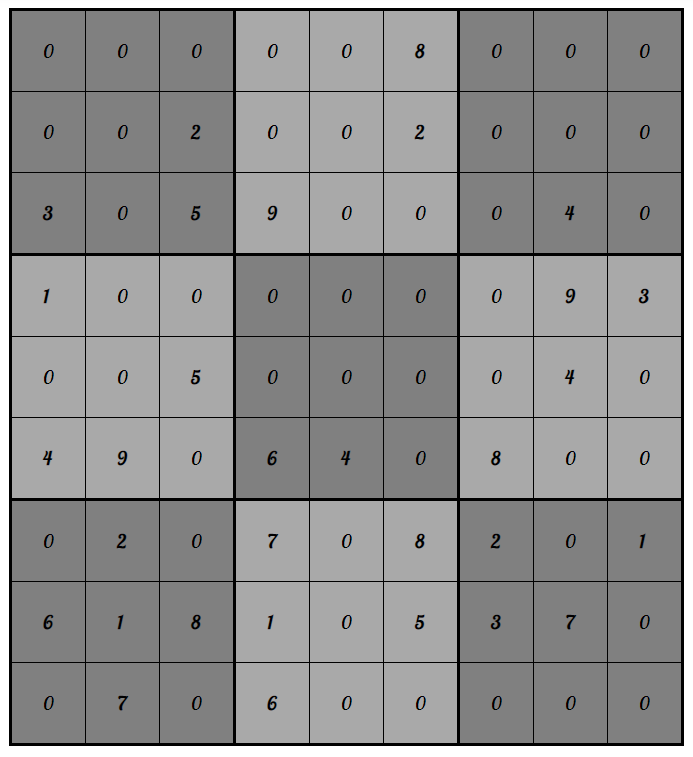
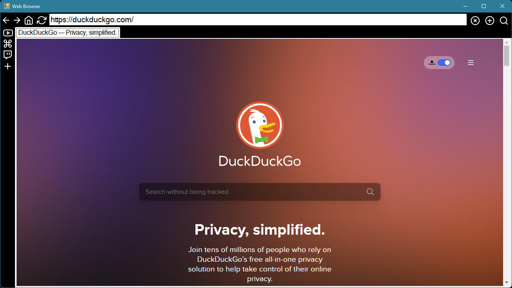

Sudoku Game
It is written in ASP.NET. I used Object Oriented Programming.
I learned a lot about C# and how to orgranize code.
This was my first time using ASP.NET and my first time using Microsoft's .NET Framework.
I wanted to make a Sudoku game in ASP.NET because I wanted to learn how to use it and
I had an idea on how to make it work. After I had started work on it, I realized that my idea
would not work out. It's an project better made in WinForms.

Gibs Browser
Gibs Browser was my first time using WinForms. I wanted to make a browser that was simple to use,
had most of the functionality of a normal browser, and I could customize the basic GUI.
I like certain parts of Opera GX, like the sidebar, so I tried to implement that into my browser.
I used CefSharp to display the webpage, which is a .NET wrapper for the Chromium browser.
It's not finished enough for other people to use it, but it's a good start.